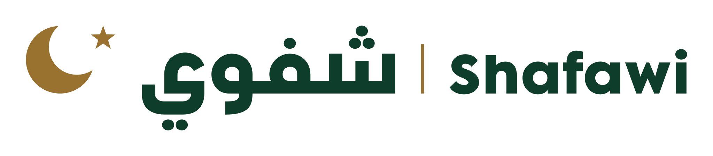
Buka app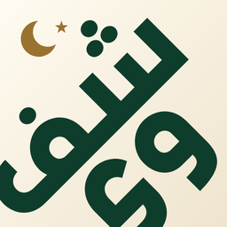
Shafawi memaparkan satu ayat. Anda sambung bacaan dari ingatan, teka surahnya, kemudian teka di mana ayat itu terletak dalam Mushaf Madinah. Setiap jawapan diberi markah, dan ayat yang tersilap boleh terus disimpan ke Catatan untuk diulang.
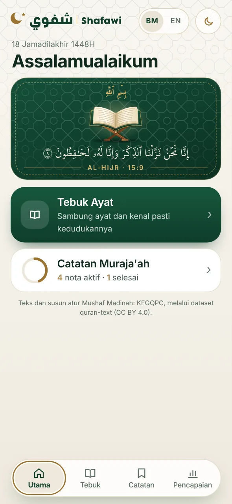
Shafawi dibina di atas dua ciri yang saling melengkapi.
App papar satu ayat. Anda sambung dari ingatan, kemudian buktikan anda tahu di mana ia berada.
Ayat yang tersangkut dicatat supaya diulang sehingga benar-benar lekat.
Setiap soalan menguji bacaan, surah dan letak ayat pada muka surat.
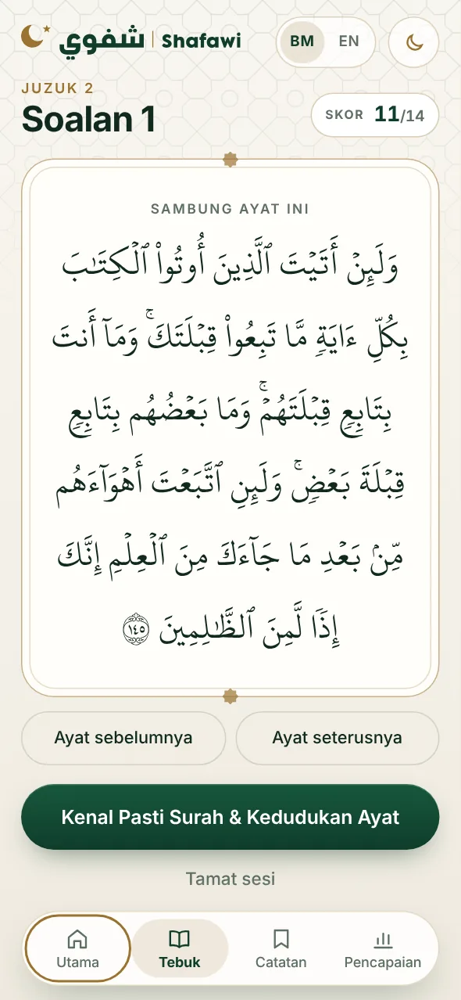
Baca sambungannya dari ingatan. Buka ayat seterusnya atau sebelumnya untuk menyemak.
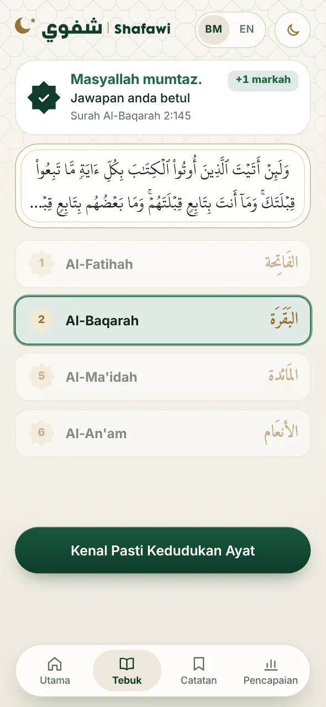
Empat pilihan, tiga daripadanya surah berdekatan supaya benar-benar teruji. Betul, dapat 1 markah.
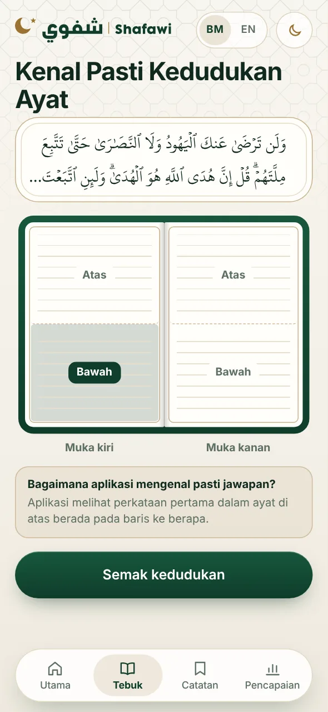
Muka kiri atau kanan, atas atau bawah. App menilai ikut baris perkataan pertama ayat itu.
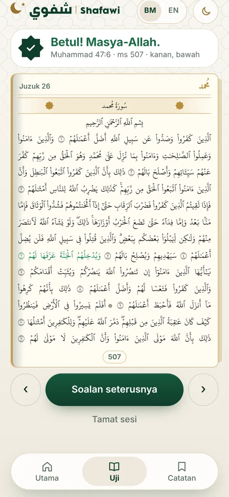
Keputusan kedudukan dan 1 markah lagi, dengan muka surat penuh dan ayat soalan berwarna emas.
Skor berjalan di penjuru soalan. Tekan Tamat sesi untuk lihat ringkasan: peratus, gelaran, berapa surah dan kedudukan yang betul, serta senarai ayat untuk diulang.
Tab Pencapaian menunjukkan graf 7 hari, purata skor dan setiap sesi lepas mengikut hari, walaupun beberapa sesi dalam sehari.
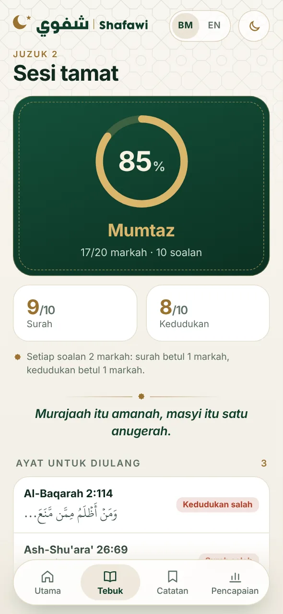
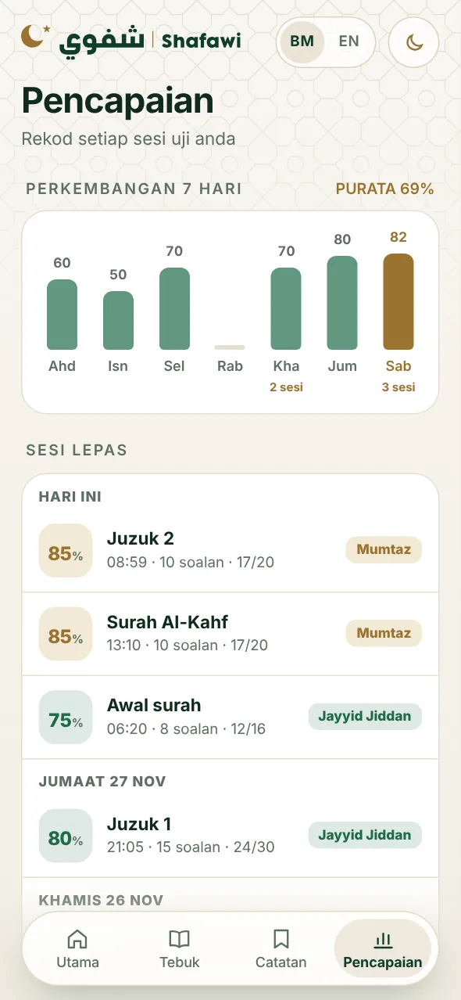
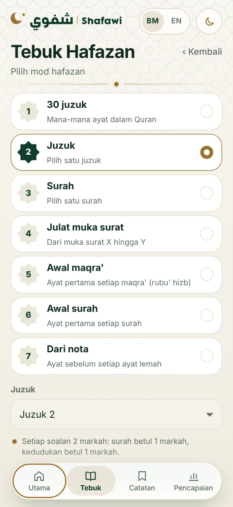
Uji seluruh Quran, atau fokus pada bahagian yang sedang diulang. Setiap soalan 2 markah: surah betul 1 markah, kedudukan betul 1 markah.
Ayat yang tersangkut tidak dilupakan. Pilih surah dan ayat, teks ayat terus dipaparkan, kemudian pilih kategori dan tulis catatan.
Dua kategori terakhir diisi sendiri oleh app bila anda simpan ayat yang salah dari sesi Tebuk Ayat.
Semua nota tersusun dalam tab Catatan ikut turutan mushaf, dengan penapis Aktif, Selesai dan Semua. Tandakan setiap kali ayat itu diulang.
Nota dalam gambar ialah contoh.
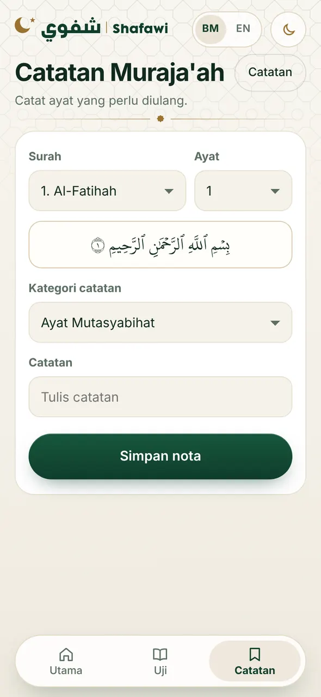
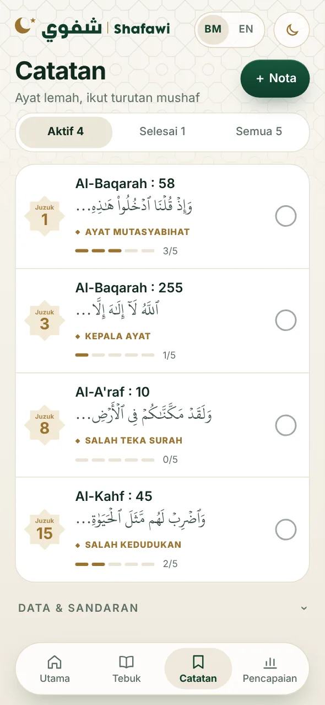
Tekan BM atau EN di atas untuk tukar bahasa, termasuk menu bawah: Utama, Tebuk, Catatan dan Pencapaian. Mod gelap ikut tetapan telefon, atau tukar sendiri dengan butang bulan.
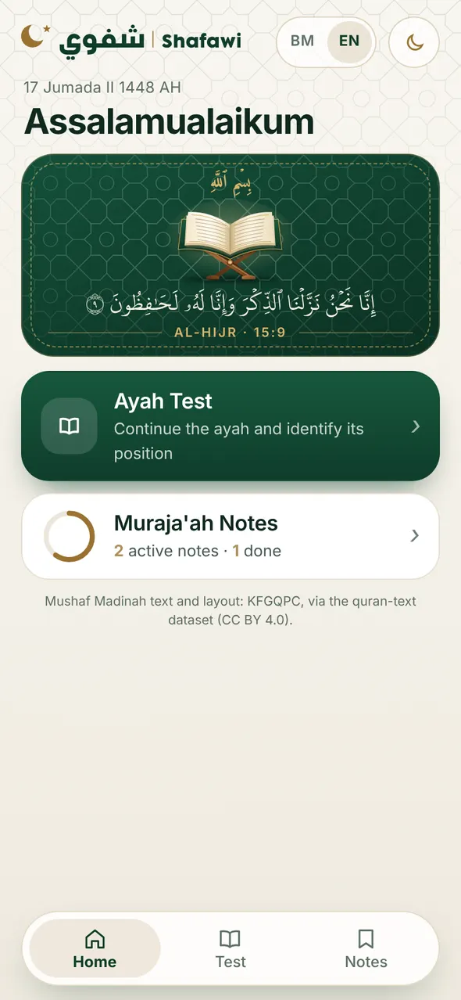
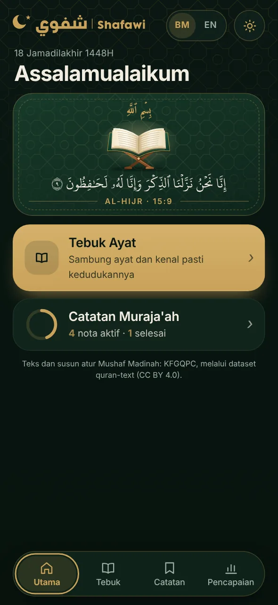
Kurang 1 minit. Percuma, tanpa App Store atau Play Store.
Say it. Prove it. Keep it.